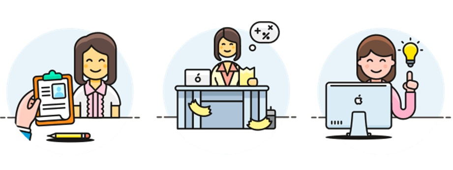

❖ Leer los antecedentes: Leer y entender tanto como sea posible los antecedentes de los entrevistados y su organización.
❖ Establecer los objetivos de la entrevista: Utilice los antecedentes que haya recopilado, así como su propia experiencia para establecer los objetivos de la entrevista.
❖ Decidir a quién entrevistar: Incluir a gente clave de todos los niveles que vayan a ser afectadas por el sistema de alguna manera. .
❖ Preparar al entrevistado: Prepare a la persona que va a ser entrevistada hablándole por anticipado o enviándole un mensaje de correo electrónico y dándole tiempo para pensar en la entrevista.
❖ Decidir el tipo de preguntas y la estructura: Escribir preguntas que abarquen las áreas clave de la toma de decisiones que haya descubierto al determinar los objetivos de la entrevista.